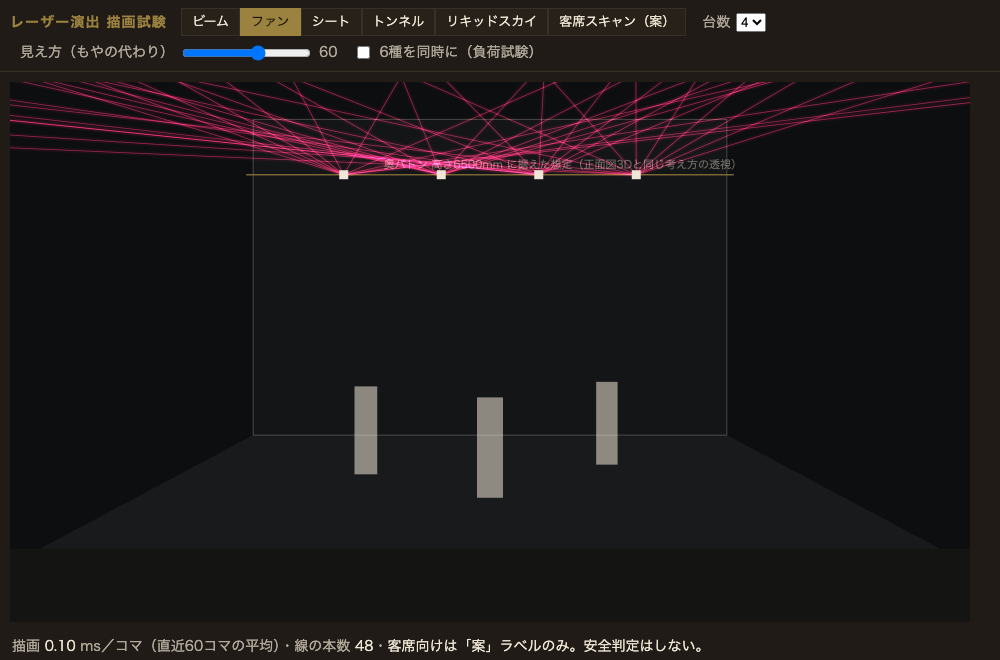
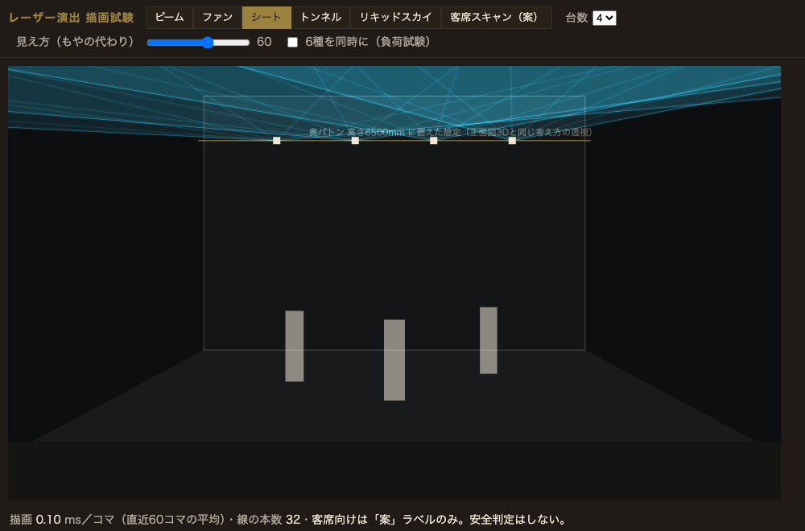
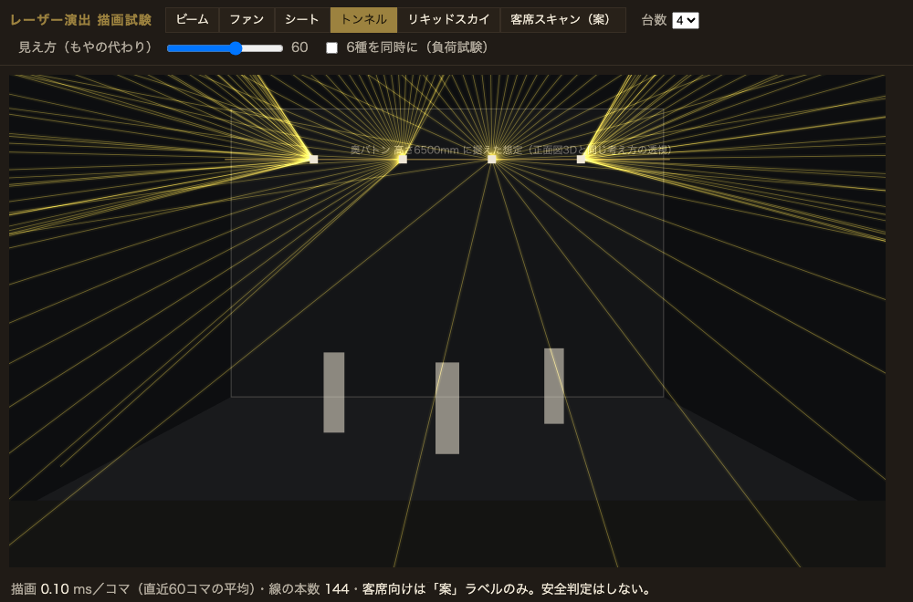
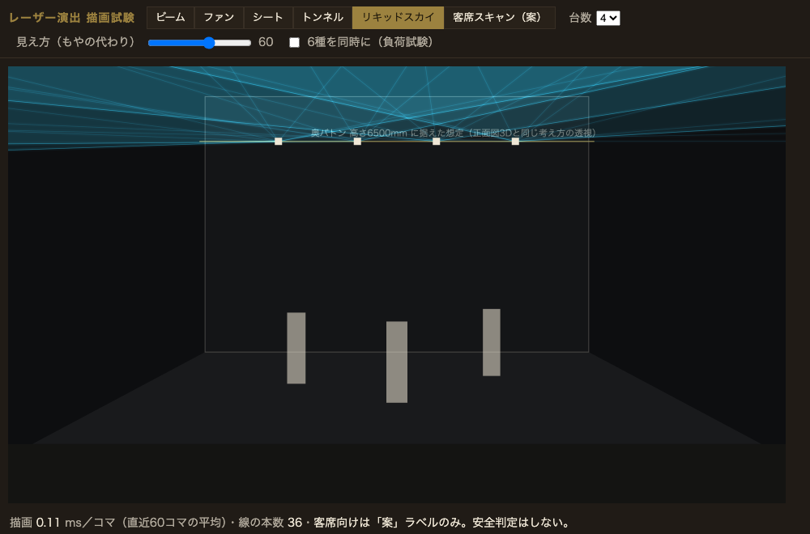
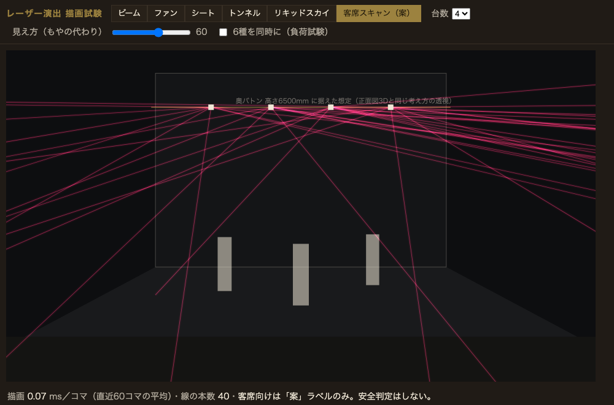
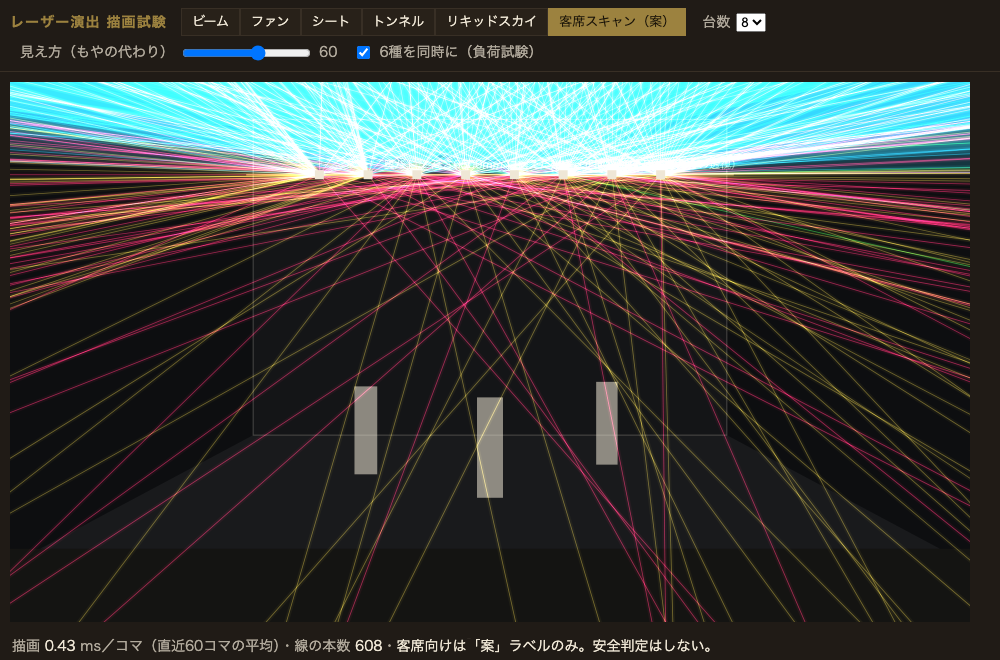
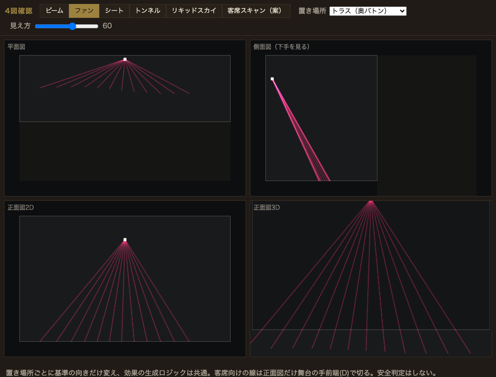
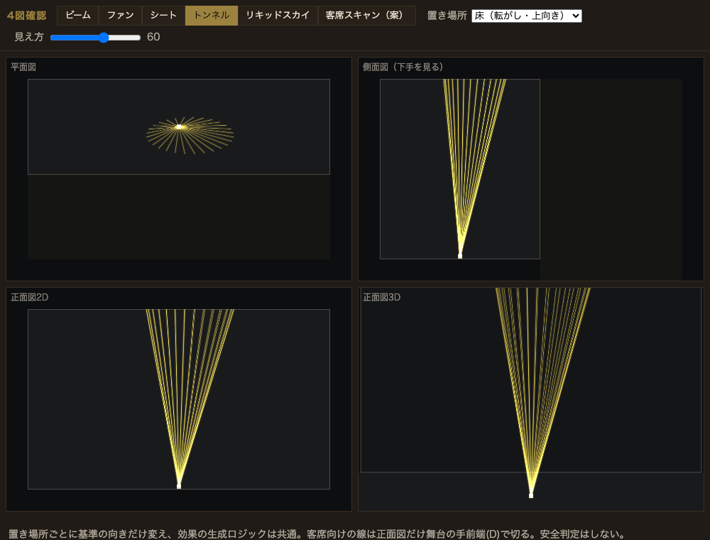
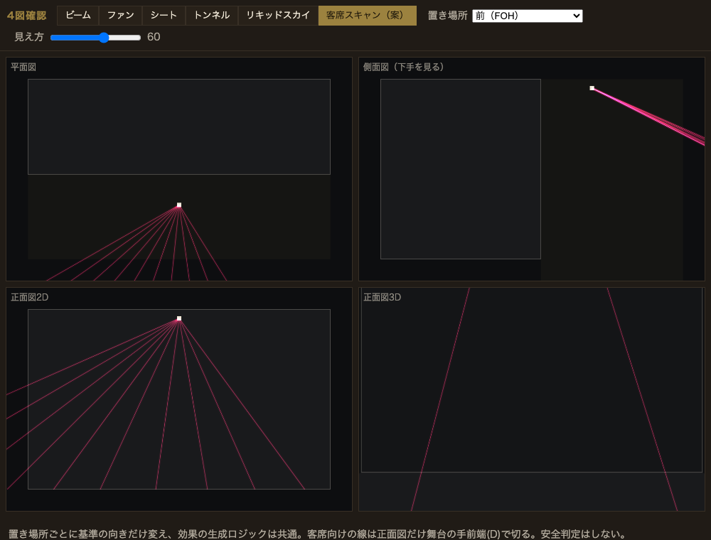

照明デザインモードに「レーザー演出」を足せるか — 可否の確認と設計計画
判断してほしいこと → 2026-09-15 本人「OK」により推奨案で確定
- 方式: レーザーは「もや（体積光）」ではなく線と面の幾何として描く。細かい調整は持たず、6種の見本カード＋3つのつまみ（色・広がり・速さ）だけ。→ 確定
- 客席スキャンのカード: 入れる。「案」ラベル固定・安全判定なし。→ 確定
- 置ける場所: トラス（奥・中・手前いずれの高さも可）・転がし（床）・前（FOH＝前明かりと同じ位置）の3か所。SS（横）とホリゾントは対象外。→ 確定
この節から下は実装の根拠となった設計。§1.5 に4図での確認、§5.5 に確定UI文言、§8.5 にテスト観点を記録（2026-09-15）。
- 既存の試作（照明デザインモード）の投影
P(world)・狙い点・往復／円の動き・再生時計をそのまま使い、灯体の種類に「レーザー」を1つ足すだけで、ビーム／ファン／シート／トンネル／リキッドスカイ／客席スキャンの6種を4図（平面・側面・正面2D・正面3D）に描ける。 - 負荷は既存の「もや」（体積光。負荷で0固定中）とは別物で軽い。使い捨ての描画試験で、4台同時でも1コマ0.1ms前後・約50fps（ヘッドレスChromium・GPUなし）。6種×8台＝線608本の負荷試験でも約25fps。実運用（1〜2台・1種）なら既存描画のほうが重い。
- 本人指示どおり「雰囲気」に絞る。機材のモデル化（出力W・スキャナ角・DMX）はしない＝照明UIの既定方針と同じ。
- 影響範囲は
docs/配下の試作だけ。ベータ配布物・保存形式・音楽パネルには触れない（AGENTS.md の停止条件に該当しない。本体統合は別途）。
1. 6種の演出と、スケッチでの表し方
定義はレーザー機器メーカーの解説（Pangolin、出典は§8）をもとに一般語として整理した。どれも1台の投射機から出る線の集合で、違いは「線の並べ方」と「時間の動き」だけ。これが「1種類の灯体＋6つの見本」で済む根拠。
| 見本 | 実物 | 線の並べ方（中心方向＝既存の狙い点） | 時間の動き | 線の本数 |
|---|---|---|---|---|
| ビーム | 1本の細い光線 | 中心方向そのもの | 既存の往復／円で振る | 1 |
| ファン | 扇状に並んだ線の束 | 水平に ±広がり/2 で等間隔 | 束全体をゆっくり左右、各線が小さく上下 | 12 |
| シート | 薄い光の面（天井のように） | 水平に密に並べ、多角形で薄く塗る＋縁2本＋中の筋 | 面の高さがゆっくり上下 | 40点／描くのは約10本 |
| トンネル | 円錐の面（客席から見ると輪） | 中心方向のまわりに半頂角で円周に並べる | 輪がゆっくり回る | 36 |
| リキッドスカイ | 波打つ光の天井 | シートの各点の仰角を正弦で揺らす | 2つの波（周期の違う正弦） | 48点／描くのは約12本 |
| 客席スキャン（案） | 客席へ向けて振る扇 | ファンを客席へ・下向き | 左右に振る | 10 |
描画試験の結果（雰囲気の確認）






試験は使い捨ての単独HTML（製品コード・試作本体に手を入れていない）。透視は正面図3Dと同じ考え方の簡易版。演者はシルエットの板で代用。
試験で見えた直すべき点: ①線が会場の天井を突き抜けて図の外へ出る → 製品では会場の高さ dims.H で止める。
②演者の手前を通る線が体の上に乗る → 製品では「レーザーは演者より先に描く」（奥バトンからの投射が主なので近似として十分。§4）。
1.5. 4図（平面・側面・正面2D・正面3D）＋3か所の置き場所で確認（2026-09-15追記）
「置ける場所」の推奨3案（トラス／床／前）それぞれで軸の向きだけ変え、線の生成ロジックは共通にできるかを 別の使い捨て試験（4図同時表示）で確認した。結果: できる。



床置きは光の中心方向がほぼ鉛直になる（トンネルが縦に立つ）。この軸に対して法線方向（左右・上下の基準）を作る計算は、
真上を向くと定義が壊れる特異点を持つ——volume-light.js の compile() がすでに同じ手当て
（軸がほぼ鉛直なら参照ベクトルを切り替える）を実装済みなので、レーザーの基底計算もそこへ合わせればよい（新規の考案は不要）。
この試験中に見つけた不具合（設計を裏付ける発見）: 光源が客席側（FOHの前明かり位置・v>1）にあるときに
「客席側へ向かう光は正面図の舞台手前端で切る」処理をそのまま当てはめると、切る基準点まで光源自体が動いてしまい正面図が空白になった。
本体の houseCutAtFront にはこのガード（S.y >= D なら切らない）が最初から入っている。
→ この処理は新規に書き直さず、本体の houseCutAtFront／houseFarPoint をレーザーからもそのまま呼ぶ
（§4の方針を再確認・格上げ。呼び出し方の実例として試験のフォークを残す価値は無い＝この不具合は試験側だけの再実装ミスで、方式そのものの欠陥ではない）。
2. 方式の比較（3案）
A. 線と面の幾何で描く（推奨）
各線を「にじみ（太・薄）＋芯（細・濃）」の2ストローク、合成は lighter（光は足し算）。面は多角形の薄塗り。
既存の投影 P をそのまま使う。
軽い（実測済み）・4図で同じ関数・既存の狙い点と動きを流用。
弱点: 演者による遮蔽は描き順の近似（§4）。もやの濃さは表せないので「見え方」のつまみで代用。
B. 既存の体積光（volume-light.js）に細い円錐として載せる
レーザーを広がり1°の円錐として既存のスライス描画へ渡す。
不採用。
体積光は負荷のため現在もや0で停止中（トークン§21）。ファン12本・トンネル36本を円錐で通すと数十倍の負荷。線が細すぎてスライス解像度（幅192px）では消える。
C. 既存の光の帯（drawBeam）を細くして流用
asLine 相当で描く。
不採用。
drawBeam は「面に着地して光だまりを作る」前提で、暗転の穴・バーンドア・ゴボの分岐を全部通る。レーザーは光だまりを作らないので、通す意味がなく複雑さだけ残る。§4-8 の本人指摘「レーザーが1本出ているようなニュアンス」を逆手に取る形で、別関数にしたほうが読みやすい。
3. データ設計（試作の2層に沿う）
既存: state.rig.fixtures[]（ショー共通の配置）／scene.cue.lights[fid]（シーンごとの点灯・色・狙い点・動き）。ここに「レーザー」を足す。
// 配置（ショー共通）: 灯体に kind を1つ足す。mount は既存のまま
fixture = { id, kind: "laser", // 既存の灯体は kind 未設定＝従来どおり
mount: { type: "truss"|"floor"|"front", ... } }
// シーンごと（LX cue）: 既存の light に laser を1つ足す。狙い点・動きは既存を流用
cue.lights[fid] = {
on, level, color, // 既存。color は既定を緑 #38e04a に
surface: "air"|"floor"|"back"|"house", // 既存。中心方向＝S→狙い点
path: { kind:"still"|"line"|"circle", ... }, // 既存。往復／円で束ごと振る
periodSec, // 既存。振る速さ
laser: { effect: "beam"|"fan"|"sheet"|"tunnel"|"liquid"|"audience",
spanDeg: 60, // 広がり（10〜120）。トンネルは半頂角×2
vis: 60 } // 見え方 0〜100（もやの代わり。表示用）
}
- 中心方向と動きは新設しない。既存の狙い点（3D点 {u,v,hM}・面ごとの制約）とパス（往復・円・鏡・組）がそのまま効く。これで「組にして鏡のように動く」「順に」も無料で付いてくる。
- 既存の灯体に無い項目は
laserの1鍵だけ。読み込み時にkindが無い灯体は従来どおり。保存済みの設計（照明テスターの書き出し）は壊れない。 - 細かい調整はしない（本人指示）: 線の本数・にじみ幅・波の周期は見本ごとの定数（トークンシート§3）。UIには出さない。
4. 幾何と描画
幾何（rig-engine.js・純関数・テスト対象）
E.laserRays(effect, S, axis, spanDeg, phase, dims) → [{ d:{x,y,z} }] // 中心方向 axis のまわりに方向ベクトルを並べる
E.laserLanding(S, d, dims, reach) → { world, on:"floor"|"back"|"ceil"|null } // 床・奥壁・天井(H)で止める。抜けるなら reach 先
- phase は
state.play.t / periodMs（既存の再生時計）。停止中は t=0 の形＝静止画でも扇や輪に見える。 - 天井で止めるのは新規（既存の
beamLandingは床・奥壁のみ）。客席方向へ抜ける線は既存のhouseFarPointと同じく「図の外まで伸ばす」。
描画（app.js・4図共通の1関数）
drawLaser(ctx, P, f, l, t, opts) // 線: にじみ lineWidth 9 α0.10 ＋ 芯 1.6 α0.85、面: fill α0.16、合成 lighter
| 図 | 描き方 | 既存規則との整合 |
|---|---|---|
| 平面図 | 線をそのまま投影。シート／リキッドは多角形。客席向けは枠の外まで | 「客席へ向かう光は横に開く帯」（§4-x, 2026-09-14）と同じ扱い |
| 側面図（下手／上手） | 同上。面は横から見ると線に潰れるので縁2本＋薄い帯 | — |
| 正面図2D | 客席向けは舞台の手前端で切り、光源のまぶしさで表す | 2026-09-14 本人指摘「斜めに降りて見える」対策をそのまま適用 |
| 正面図3D | 全部描く。目より手前は NEAR で打ち切る（膨らみ防止） | 試験の clipNear と同じ |
- 描き順: ホリゾント → レーザー → 演者・セット → 通常の光 → 暗転マスク → レーザーをもう一度薄く（α×0.35）。暗転（室内灯を消す）でレーザーが消えるのは変なので、マスクの上に薄く重ねる。演者の遮蔽は「演者が手前」の近似。
- 暗転の穴は作らない（光だまりが無い）。
litSpotsへは何も積まない。 - 光源のまぶしさ: 既存の
drawGlareを level×0.6 で流用（レーザーの点光源は強い）。 - Safari:
lighter合成は使える（ctx.filterは使わないので既知の不具合に当たらない）。
5. UI（見本カード＋3つのつまみ）
レーザー（案）
客席スキャンは案の表示だけです。実施には専門の安全管理（JIS C 6802 の実演の項）が要ります。
- 入口: 配置パネルの「置く」に「レーザー」を1つ追加（トラス・床・前に置ける）。置くと灯体情報パネルの「動きの型」の上に上のカード群が出る。
- カードは切り替え式（押すとそれだけになる。2026-09-14 の「あるある」と同じ方針）。
- 狙い点と動きは既存UI（当てる場所・A/B・円・組）をそのまま使う。レーザーだけの動きUIは作らない。
- 色は5色のチップ（レーザーは単色光なので任意色ピッカーにしない。白は3色合成）。
- 「見え方」は表示用のつまみ。数値の意味は「濃さ」だけで、もやの量を測るものではないと注記。
- 一覧の印は既存の
drawFixtureMarkに形laser（◇）を足す。未設定／消灯／点灯の文字区別は既存どおり。
5.5. UI文言（確定・実装セッションはこのまま使う）
本人確認が必要なのはこの文言だけ（DECISION §判断済み事項の対象外だったため個別に確認する）。 既定案のまま進めてよければ、実装セッションでの再確認は不要。
| 場所 | 文言 | 備考 |
|---|---|---|
| 置く入口 | レーザー | 配置パネルの「置く」一覧。既存の4種（吊り／SS／前明かり／転がし）と横並び |
| カード見出し | レーザー（案） | 灯体情報パネル。「案」を必ず付ける（機材の実仕様ではない旨） |
| カード6枚 | ビーム／ファン／シート／トンネル／リキッドスカイ／客席スキャン（案） | 客席スキャンだけ名前にも「（案）」を重ねて付ける（一覧だけ見ても分かるように） |
| 色つまみ | 色 | 選択肢: 緑（既定）／赤／青／黄／白 |
| 広がりつまみ | 広がり | 単位は既存の beamDeg と同じ「°」表示 |
| 速さつまみ | 速さ | 選択肢は既存の3段をそのまま流用（ゆっくり／普通／速い） |
| 見え方つまみ | 見え方 | 0〜100。ホバー説明: 「もやの量ではなく、線の見やすさの目安です」 |
| 客席スキャンの注意文 | 客席スキャンは案の表示だけです。実施には専門の安全管理が要ります。 | 常時表示・閉じるボタンなし（§6と同じ理由）。数値は書かない |
| 一覧の「未設定」表記 | 未設定のレーザー | 既存の「未設定の灯」と同じ言い回しに揃える |
i18n（仏・簡体・繁体）は現行どおり shosai-app/i18n-prep/ の運用に合わせ、この試作段階では日本語のみで進める（試作は多言語化の対象外。HANDOFF §1参照）。
6. 安全の扱い（判定はしない・ラベルだけ）
- アプリは安全判定をしない（照明UIの既定方針＝点滅と同じ扱い）。客席スキャンのカードだけ常時「案」ラベルと一文の注意を出す。
- 根拠（一次情報）: JIS C 6802:2014 附属書 JA.3.4「レーザーの実演，ディスプレイ及び展示」は、管理されていない区域ではクラス1・2・可視3Rだけを用いることが望ましく、それ以外はリスク評価と訓練を受けた操作員の管理下で観客がMPE超えの被ばくから保護されている場合に限る、としている（LASA安全講習テキスト2025に引用。§8）。同テキストは「レーザーディスプレイでは観客に対しては10秒、関係者に対しては0.25秒」の露光時間を適用すると記す。
- 注意文はこの範囲に留め、数値（距離・出力）は書かない。数値を書くと「アプリが安全を判定した」ように読まれる。
7. 既存への影響と検証
| 対象 | 影響 | 検証 |
|---|---|---|
| ベータ配布物・保存形式・音楽パネル | なし（docs/ の試作のみ） | AGENTS.md の停止条件に該当しない。本体統合時に改めて警告・検証 |
| 試作の保存データ（照明テスターの書き出し） | 鍵の追加のみ（fixture.kind・light.laser） | 旧データ読み込みで全灯が従来どおり描けること（テスト） |
| 既存の描画（drawBeam・暗転・バーンドア） | 触らない（別関数） | 既存テスト 12/12・7/7 が通ること。8人のサーカスの見本で4図の目視 |
| 負荷 | 線100〜300本／コマ増 | 上部の「描画 ms／回」表示で、レーザー2台追加前後を比べる（目安: +1ms以内） |
| 並行編集 | app.js／index.html は別セッションが同時編集中 | 着手前に mtime・md5 確認、編集は1回の読み書き、節目で控え（HANDOFF §2） |
8. 実装計画（別セッション・合同）
| 順 | 作業 | 成果物 | 目安 |
|---|---|---|---|
| 1 | 幾何: laserRays／laserLanding（天井止め）＋テスト（6種の本数・対称性・天井/床/奥壁の着地） | rig-engine.js、tests/light-rig-laser.test.mjs | 2h |
| 2 | 描画: drawLaser を4図へ。描き順・暗転の上の薄重ね・まぶしさ | app.js | 3h |
| 3 | UI: 置く「レーザー」・カード6枚・つまみ3つ＋見え方・一覧の印・注意文 | app.js、index.html | 3h |
| 4 | 見本: 8人のサーカスの1場面にレーザー2台（奥バトン中央にファン、床にトンネル）を入れる | app.js の見本データ | 0.5h |
| 5 | 検証: 4図の証拠画像（Playwright）・描画msの前後比較・旧データ読み込み | evidence/、notes.md | 1h |
| 6 | 記録: 設計正本 §4-21・トークンシート・HANDOFF・公開は経路A（rebase禁止） | docs | 0.5h |
合計およそ1.5日。1〜2は仕様が決まっているので Sonnet 向き。3のカードの並びと注意文の言い回しだけ本人確認を挟むとよい。
8.5. テスト観点（tests/light-rig-laser.test.mjs・実装セッションはこの一覧をそのままケース化）
| 関数 | ケース | 期待 |
|---|---|---|
laserRays | fan, spanDeg=60, N=12 | 本数12。両端の方向ベクトルが中心方向から±30°（span/2）。左右対称 |
| tunnel, 半頂角=12° | 各方向が中心軸から一定の12°を保つ（内積 = cos12°）。円周上に等間隔 | |
| beam | 本数1、方向＝中心方向そのもの | |
| periodSec 反映 | t=0 と t=periodSec で同じ形（1周期で元に戻る） | |
laserLanding | 真下向き・床あり | on:"floor"、着地z=0 |
| 真上向き（床置き上向き） | on:"ceil"、着地z=dims.H（新規。既存 beamLanding には無い分岐） | |
| 奥壁方向 | on:"back"、着地y=0 | |
| どこにも当たらない角度（客席スキャンで下向きが浅い等） | on:null、reach 先まで伸びる | |
| 基底（縮退対策） | 中心方向がほぼ鉛直（floor mount） | ローカル基底の右・上ベクトルが有限（NaN・ゼロ除算にならない）。volume-light.js compile() と同じ参照ベクトル切替を通ること |
| houseCutAtFront 流用 | 光源が客席側（S.y>=D）で客席スキャン | 切られない（正面図が空にならない）。§1.5で見つけた不具合の再発防止テスト |
| 旧データ互換 | fixture.kind 未設定の既存灯体を読み込む | 従来どおり描画される（laser分岐に入らない） |
9. 確定事項（旧: 未決事項・2026-09-15 本人「OK」で確定）
- 客席スキャンのカード: 入れる。舞台からの見え方を演出家が知りたいのは客席向けの光でも同じ（既存の「客席へ」と同じ理由）。安全は判定せずラベルで示す。
- 置ける場所: トラス・床・前 の3か所。SSは実物でも稀、ホリゾントは灯体の性質が違う。
- 白の扱い: 5色に白を含める（RGB合成機は白が出せる）。色ピッカーは出さない。
- 本体（stage-sketch.js）への統合時期は今回の範囲外。試作で雰囲気が確認できてから。
「OK」は上の3問への回答として扱った（本人が個別に選び直した場合はそちらを優先）。UI文言（§5.5）だけは 別途の確認事項として残る。
10. 根拠と信頼度
| 事項 | 根拠 | 信頼度 |
|---|---|---|
| 6種の定義 | Pangolin: Types of Laser Shows & Effects、Pangolin/KVANT: Laser beam and aerial effects（メーカー解説。2026-09-15閲覧） | 高（一般に通用する語） |
| 空中の線はもやが要る | 同上（"haze is crucial to an aerial laser show"） | 高 |
| 安全の枠組み（JIS C 6802 JA.3.4・観客10秒） | LASA安全講習テキスト2025（PDF）、JIS C 6802:2025（日本規格協会） | 中（JIS本文は未購読。テキストの引用文で確認） |
| 負荷の実測 | spike/measure.cjs（ヘッドレスChromium 1000×660・GPUなし・2秒平均）。本文§1 | 中（実機のGPU環境では速い側に振れる。試作本体に載せた値は未計測） |
| 既存コードの流用可否 | app.js の drawFront3D／spatialLight／houseFarPoint／houseCutAtFront、rig-engine.js の newLightCue／constrainPointToSurface を読んで確認。houseCutAtFront のガード漏れは§1.5の試験で実際に不具合を再現して確認 | 高 |
| 広がり角度 `spanDeg` の既定値（ファン60°等） | Pangolin: Understanding Scan Angles（「エンタメ用の実効スキャン角はおおむね40〜60°」という一般論のみ） | 低（効果ごとの一次資料なし。トークンシート§3に「推測」と明記。UIのつまみで変更可能なので実害は小さい） |
| 4図×3か所（トラス／床／前）で描けること | spike/multiview.html＋evidence/laser-4view-*.png（本文§1.5）。ヘッドレスChromiumでの目視のみ | 中（実際の本体描画関数を通した確認ではない。簡易透視の近似） |
推測と明示した箇所: 6種の spanDeg 既定値（ファンの60°のみ一般論の範囲内、他は見た目基準の推測）。
演者の遮蔽の近似で違和感が出ないか（要目視）。実機GPUでの描画ms。試作本体へ載せたときの合計ms。